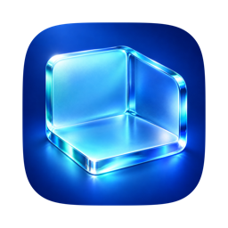

Make space thoughtfully.
Review caches, developer files, AI-tool leftovers and app-related data before cleanup.

RoomyClean up the clutter. Find what’s taking space. See what your Mac is doing.
A native Mac utility, free and open source.
v0.2.2 · macOS 26+ · Apple silicon Not Apple-notarized
One app. A few useful perspectives.
Synthetic demo data6 GB in 9 of 9 items · 4 groups · 1 kept because its app is open
These belong to apps that are open or need your review.
Your Trash (320 MB) isn’t touched. Empty it when you’re sure.
Review development caches, see what’s selected, and choose what to keep.
Interface recreated from published v0.2.2 source with entirely synthetic data: invented categories and sizes. This tour does not scan or change your Mac.
Roomy brings everyday Mac maintenance into one place, from rebuildable caches to the apps and files taking up space.
Start with a scan. Review the results. Decide what belongs. The interface gives each kind of work its own view, so you can see the details before choosing an action.
Review caches, developer files, AI-tool leftovers and app-related data before cleanup.
Explore a bubble map of disk usage and a category view of storage.
Follow CPU, memory, energy, disk, network and thermal readings in Activity.
Roomy pairs a native macOS interface with Mole, the open-source cleaning engine by tw93 and contributors. Each release bundles a pinned version of Mole.
Free to use.
Open to understand.
Room to contribute.
The published 0.2.2 app requires macOS 26 or later and a Mac with Apple silicon (ARM64). It does not include an Intel build. Mole is bundled; you do not need to install it separately.
No. Release 0.2.2 has an ad-hoc signature, not an Apple Developer ID signature, and is not Apple-notarized. macOS may block it or show a warning. A download or Homebrew install does not change that status.
Read the release notes and source before deciding to install. Keep macOS protections enabled. Apple's guidance on apps from outside the App Store explains these checks.
Some areas, such as Mail attachments and protected app data, need Full Disk Access to be measured. You choose whether to grant it in macOS Settings. Results can be incomplete without it. Review the permissions guide before enabling access.
Keep Safe mode enabled, run a scan, and explore the review. Read the categories and paths, deselect anything you want to keep, and make a current backup before using cleanup. Safe mode is a preview, not a guarantee about later removal.
A custom tap is being prepared for the existing 0.2.2 release. It is not published yet, so there is no public brew command to use today. Roomy is not in the official homebrew/cask repository.
The proposed tap will preserve quarantine and macOS security checks. Use the download below in the meantime.
Roomy is free and open source under GPL-3.0, with no account or subscription. For bugs and feature ideas, open a GitHub issue. To report a vulnerability privately, follow the security policy.
Roomy 0.2.2 for macOS 26+ on Apple silicon.
Download RoomyThis release is ad-hoc signed and not Apple-notarized. macOS may block it or show a warning. Keep macOS protections enabled.
Read the release notes before deciding to install. Published SHA256 checksums · Release source